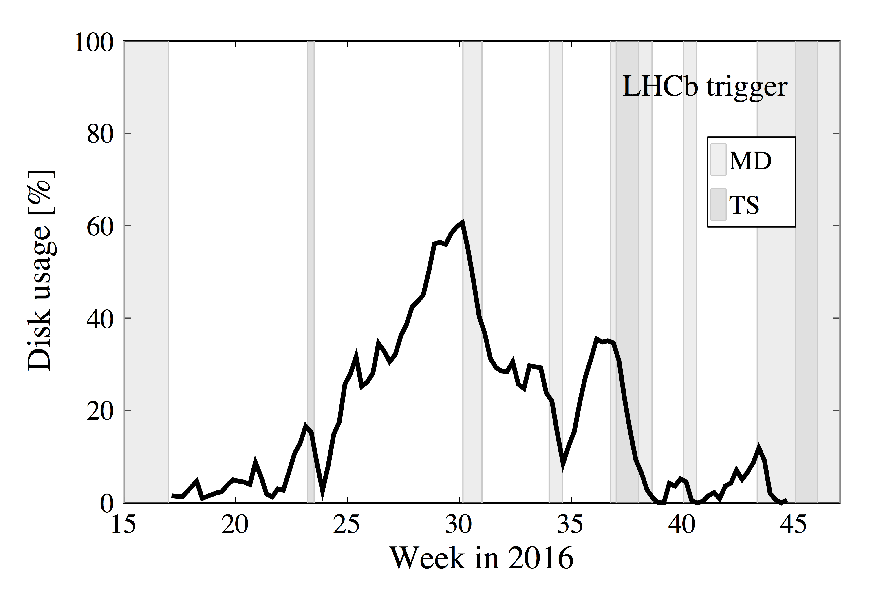

HLT intro¶
Learning Objectives
Learn about the LHCb trigger.
Learn how to run Moore from settings and from TCK.
Getting started with writing your own trigger selection.
The Run 2 LHCb trigger reduced the input rate event rate of approximately 30 MHz to 12.5 kHz of events that are written to offline tape storage. The rate reduction is achieved in three steps: L0, HLT1 and HLT2. L0 is implemented in custom FPGAs, has a fixed latency of 4 μs and a maximum output rate of 1 MHz. HLT stands for High Level Trigger.
HLT1 and HLT2 are implemented as software applications that run on the online farm; HLT1 runs in real-time and writes events to the local harddrives of the farm machines, while HLT2 uses the rest of the available CPU (100% when there is no beam) to process the events written by HLT1. The evolution of the disk buffer is shown in the figure below. Events accepted by HLT2 are sent to offline storage.

In Run I, both the reconstructions and selections used by HLT1, HLT2 and offline were very different. In Run 2 the reconstructions used in HLT2 and offline are identical, while selections might still be different. To be fast, HLT1 runs a subset of the HLT2 reconstruction, for example HLT1 provides only tracks with PT > 500 MeV and only Muon particle identification. We will see the difference in speed in the following.
A new feature in Run 2 is the so-called Turbo stream. Since the reconstruction available in HLT2 is the same as the offline reconstruction, physics analyses can be done with the candidates created in HLT2. If a line is configured to be a Turbo line, all information on the candidates that it selects is stored in the raw event. The rest of the raw event, like sub-detector raw banks, is discarded, and cannot be recovered offline. The advantage of the Turbo stream is that less data are written to tape and no CPU intensive offline processing is needed. The output of the Turbo stream is almost identical to the output of a Stripping line which goes to mdst.
For Run 3 LHCb is removing the hardware trigger and the first stage of the software trigger will run at 30 MHz. The HLT is being developed in the Real-Time-Analysis project.
Add trigger information to your ntuple¶
In this section and the following, we will explain how to find out which trigger lines selected my signal.
Copy the following DaVinci script to get an ntuple.
from Configurables import DaVinci, CondDB
stream = "Semileptonic"
stripping_line = "B2DMuNuX_D0"
from PhysConf.Selections import AutomaticData, SelectionSequence, TupleSelection
my_particles_KPi = AutomaticData( "/Event/{}/Phys/{}/Particles".format(stream, stripping_line) )
tupsel_KPi = TupleSelection (
'D0_Kpi' ,
[my_particles_KPi] ,
Decay = "([B- -> ^(D0 -> ^K- ^pi+) ^mu-]CC) || ([B+ -> ^(D0 -> ^K- ^pi+) ^mu+]CC)",
Branches = {
"B" : "([B- -> (D0 -> K- pi+) mu-]CC) || ([B+ -> (D0 -> K- pi+) mu+]CC)",
"D0" : "([B- -> ^(D0 -> K- pi+) mu-]CC) || ([B+ -> ^(D0 -> K- pi+) mu+]CC)",
"K" : "([B- -> (D0 -> ^K- pi+) mu-]CC) || ([B+ -> (D0 -> ^K- pi+) mu+]CC)",
"pi" : "([B- -> (D0 -> K- ^pi+) mu-]CC) || ([B+ -> (D0 -> K- ^pi+) mu+]CC)",
"mu" : "([B- -> (D0 -> K- pi+) ^mu-]CC) || ([B+ -> (D0 -> K- pi+) ^mu+]CC)",
},
ToolList = [] ,
)
# 1. To get information about the TCK
tupsel_KPi.addTupleTool("TupleToolEventInfo")
# 2. To get information about trigger decisions
ttt = tupsel_KPi.addTupleTool("TupleToolTrigger")
ttt.Verbose = True #Needed to get trigger decisions
DaVinci().UserAlgorithms = [SelectionSequence( 'SEQ_KPi' , tupsel_KPi ).sequence()]
DaVinci().DataType = "2018"
CondDB(LatestGlobalTagByDataType=DaVinci().DataType)
DaVinci().Simulation = False
DaVinci().InputType = 'DST'
DaVinci().Lumi = False
DaVinci().TupleFile = "ntuple.root"
DaVinci().EvtMax = 1000
from PhysConf.Filters import LoKi_Filters
DaVinci().EventPreFilters = [LoKi_Filters(
STRIP_Code="HLT_PASS_RE('Stripping"+stripping_line+"Decision')"
).sequencer('PreFilter')]
# file from lb-dirac dirac-dms-lfn-accessURL --Protocol=xroot /lhcb/LHCb/Collision18/SEMILEPTONIC.DST/00075559/0000/00075559_00002816_1.semileptonic.dst
from GaudiConf import IOHelper
IOHelper().inputFiles([
'root://eoslhcb.cern.ch//eos/lhcb/grid/prod/lhcb/LHCb/Collision18/SEMILEPTONIC.DST/00075559/0000/00075559_00002816_1.semileptonic.dst'
], clear=True)
The important line are
tupsel_KPi.addTupleTool("TupleToolEventInfo")
ttt = tupsel_KPi.addTupleTool("TupleToolTrigger")
ttt.Verbose = True #Needed to get trigger decisions
TupleToolEventInfo adds basic information about the event to your ntuple. Normally it is added by default. You will find two branches Hlt1TCK and Hlt2TCK. TupleToolTrigger adds the decisions of trigger lines. You will only find branches called L0Global, Hlt1Global and Hlt2Global. We first have to find out which trigger lines were available for these data.
What is a TCK?
The Trigger Configuration Key (TCK) stores the configuration of the HLT in a database. All algorithms and their properties are defined in it. The key is usually given as a hexadecimal number. The last 4 digits define the L0 TCK. The first 4 digits define the HLT configuration. HLT1 TCKs start with 1, HLT2 TCKs start with 2.
Which TCKs were used to trigger these data?
Find out what the hexadecimal presentation of the Hlt1 and Hlt2 TCK is.
Exploring a TCK: List of trigger lines¶
To get a list of all available TCKs one can use TCKsh which is a python shell with predefined functions to explore TCKs, do
# Use the latest available Run 2 Moore release
$ lb-run -c best Moore/v28r3p1 TCKsh
> listConfigurations()
The commands listL0Channels(<TCK>), listHlt1Lines(<TCK>) or listHlt2Lines(<TCK>) show lists of the lines in L0, Hlt1 or Hlt2. If you replace list with get, a list with the lines is returned.
Compare HLT1 lines from Run1 and Run2
Try to find out which HLT1 lines were available in Run 1 and which are now available in Run 2.
What are the names of the topological trigger lines in Run 1 and Run 2?
Add trigger information to your ntuple, continued¶
Once you have a list of trigger lines, you can add this to TupleToolTrigger:
triggerList = [
#L0 TCKsh getL0Channels(0x11741801)
"L0MuonDecision",
"L0DiMuonDecision"
"L0HadronDecision",
"L0ElectronDecision",
"L0PhotonDecision",
#Hlt1 lines TCKsh getHlt1Lines(0x11741801)
"Hlt1TrackMVADecision",
"Hlt1TwoTrackMVADecision",
"Hlt1TrackMVATightDecision",
"Hlt1TwoTrackMVATightDecision",
"Hlt1TrackMuonDecision",
"Hlt1TrackMuonMVADecision",
#Hlt2 lines TCKsh getHlt2(0x21751801)
"Hlt2Topo2BodyDecision",
"Hlt2Topo3BodyDecision",
"Hlt2Topo4BodyDecision",
"Hlt2TopoMu2BodyDecision",
"Hlt2TopoMu3BodyDecision",
"Hlt2TopoMu4BodyDecision"
]
ttt.TriggerList = triggerList
Be aware you have to append Decision to the name of the trigger line.
Add TISTOS information to your ntuple¶
For analysis purposes it is important to know if your signal candidate was part of the trigger decision or not as one has different efficiencies for both categories. The following categories exist [ LHCb-PUB-2014-039 ]:
Triggered On Signal (TOS): events for which the presence of the signal is sufficient to generate a positive trigger decision.
Triggered Independent of Signal (TIS): the “rest” of the event is sufficient to generate a positive trigger decision, where the rest of the event is defined through an operational procedure consisting in removing the signal and all detector hits belonging to it.
Triggered On Both (TOB): these are events that are neither TIS nor TOS; neither the presence of the signal alone nor the rest of the event alone are sufficient to generate a positive trigger decision, but rather both are necessary.
For a simple trigger candidate (e.g. Track), more than around 70% (depending on the subdetector) of the online reconstructed trigger candidate hits need to be contained within the set of all the hits from all offline reconstructed signal parts. For a composite candidate, the combination of all individual trigger candidates is compared to the set of offline candidates.
To add TISTOS information to your ntuple do
tttt = tupsel_KPi.addTupleTool("TupleToolTISTOS")
tttt.Verbose = True #To decisions from all trigger stages
tttt.TriggerList = triggerList
Understanding TISTOS
Explain why a single particle cannot be TOS on the Hlt1TwoTrackMVA line.
Exploring a TCK: Properties of trigger lines¶
If you want to get an overview of an Hlt line and its algorithms, you can do
> dump(<TCK>, lines = <line_names_regex>, file="output.txt")
More advanced is to search for properties of a line. One example is to search for the prescale. The prescale determines how often a line is executed, 1.0 means always, 0.0 never. Type for example:
> listProperties(0x214a160f,".*Hlt2DiMuonJPsi.*","AcceptFraction")
...
> listProperties(0x214a160f,".*Hlt2DiMuonJPsiPreScaler.*","AcceptFraction")
The regex is needed to search through all algorithms connected to a line.